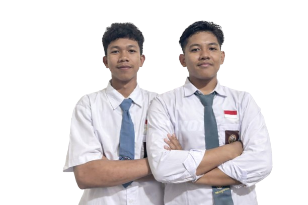
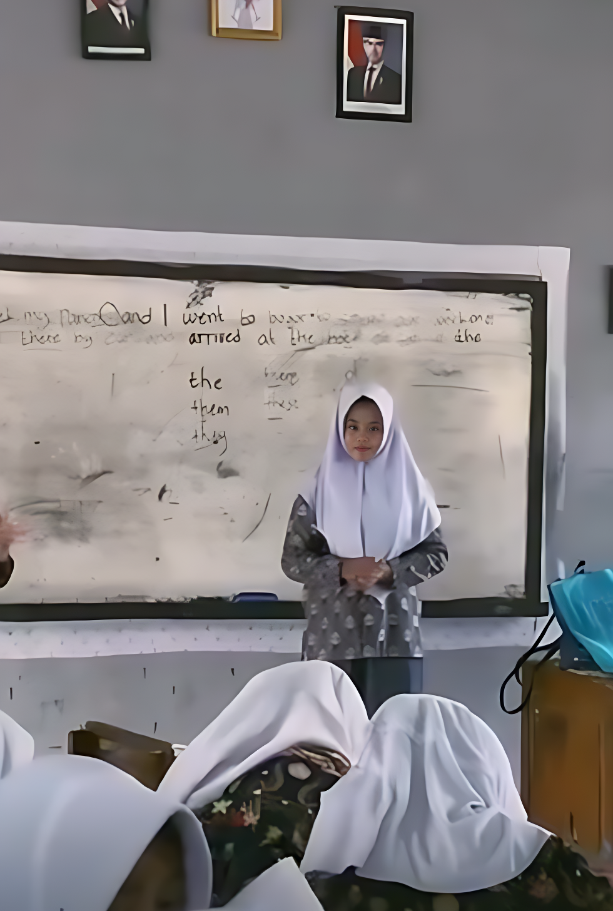
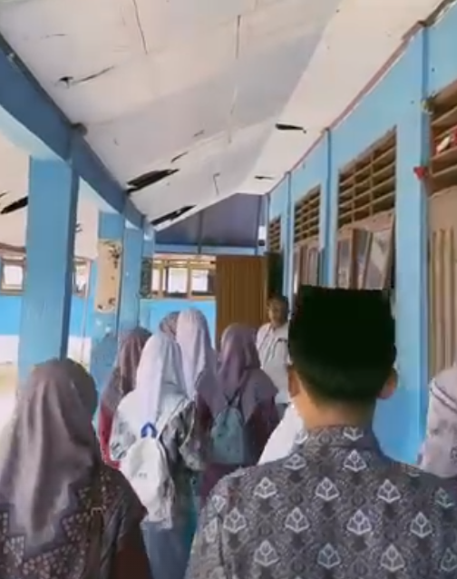
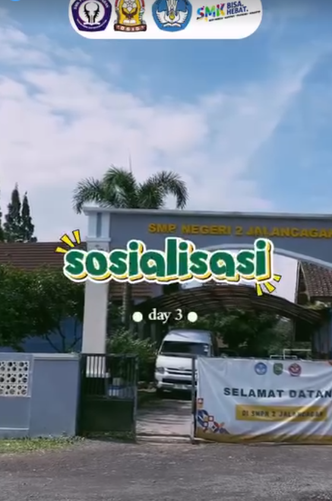
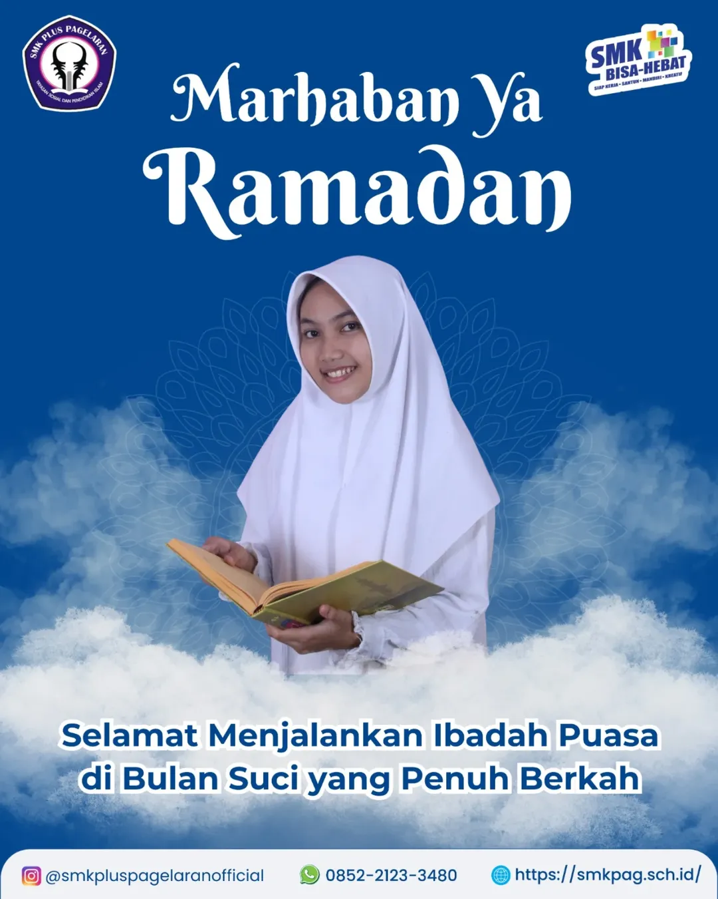
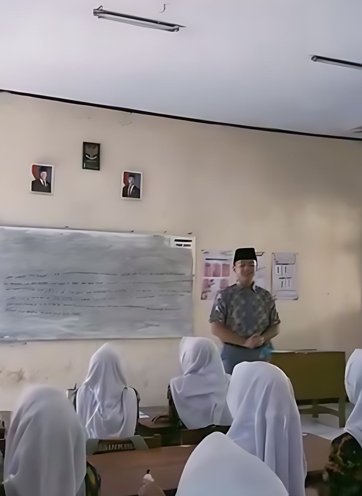
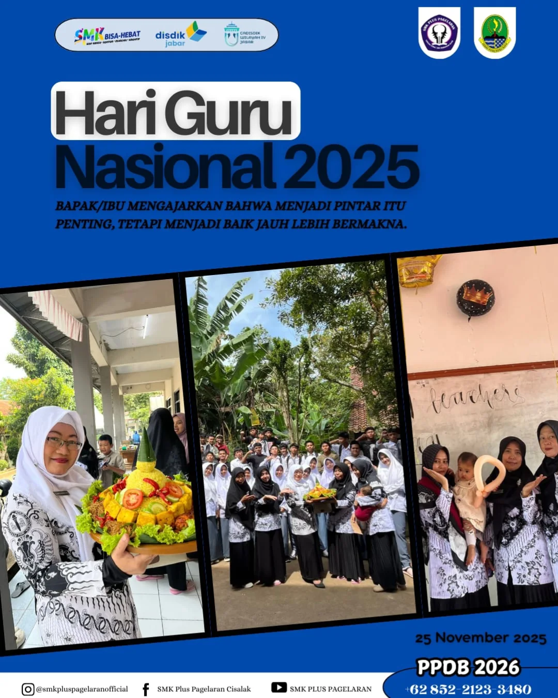
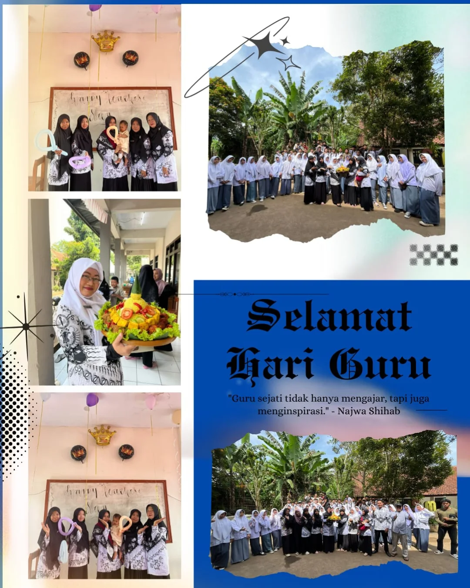
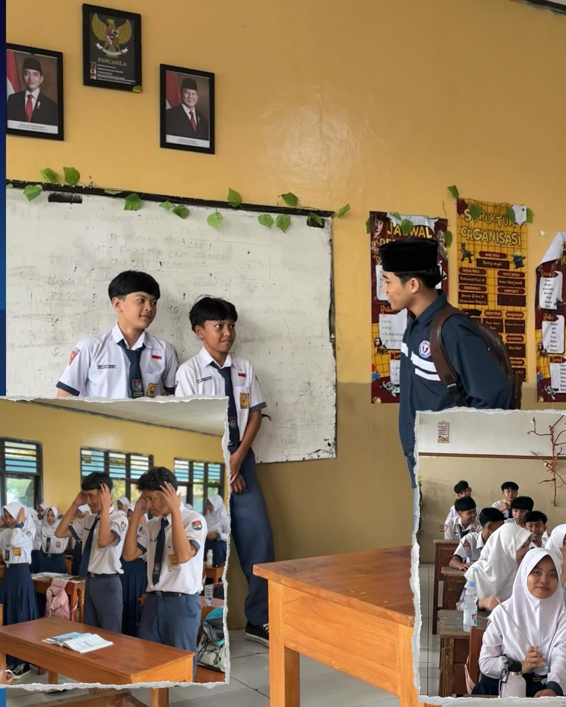
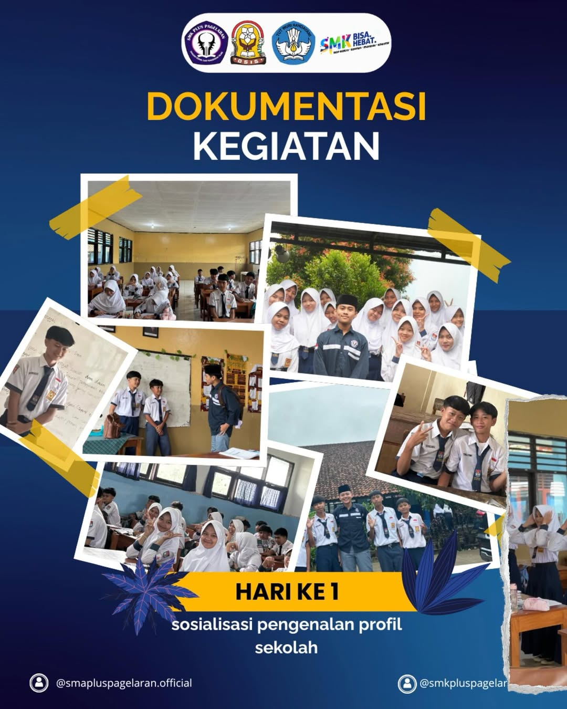

Membangun kepemimpinan, karakter, dan prestasi siswa melalui organisasi yang aktif, profesional, dan berintegritas.
Lihat Kepengurusan
H. Arie Gifary S.Ikom. S.T. M.Pd.
Ust. Dandi Sehabudin S.Pd.I. M.Pd.
Ust. Nurul Huda
Nauval Faris
Fathum Mubarok
Reza Maula
Afwa Afwika
Yasmin Nur Azzizah
Anggita Refa
Siti Nur Aisyah
Nabila Putri
Fredy
Ketua Umum : Ropi Marpudin
Ketua Paskibra : Azziz Lucky
Wakil Paskibra : Siti Indah
Ketua Pmr : Rehan Putra
Wakil Pmr : Desi Anwar
Ketua Pramuka : Idham Yusrony
Wakil Pramuka : Dimas Dwi
Ketua Umum : Siti Nur Holisoh
Ketua Gds : Ayu Yulianti
Ketua : Iqbal Faiz
Wakil : Mujiyatul
Ketua : Shafwan
Wakil : Rizkia Pratama








